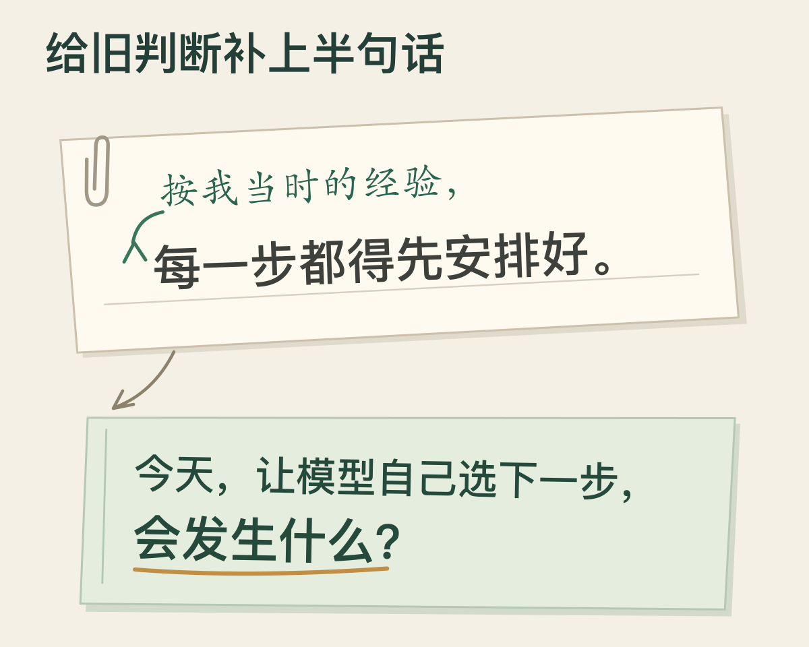
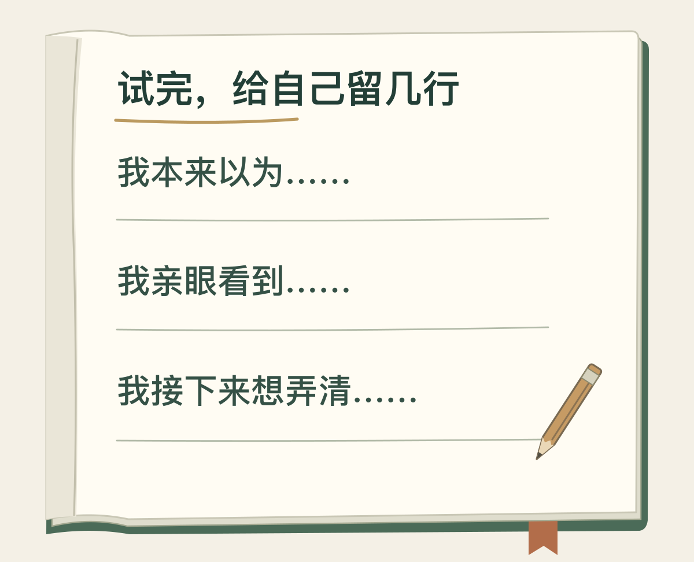

“这个我试过。”
说这句话的时候，我通常是好意。别人想走的那条路，我走过，也摔过一跤，自然想替他省点时间。可要是对方多问一句，“你上一次试，是什么时候？”我可能得想一会儿。尤其是聊到 AI 的时候。
完全陌生的东西，我倒容易虚心。麻烦的是那些我做过、做好过，甚至有点引以为豪的事。别人刚讲到一半，我已经能说出他的想法会在哪里遇到麻烦。至于他接下来原本想让我看什么，我有时反而没那么好奇了。
最近，在团队做 AI 辅助软件开发和测试的时候，我就遇到了这么一件事。我们想让 AI 拿着一条用日常语言写的测试用例，去操作产品，看看产品的反应和我们预想的一不一样。团队为此设计了一套很漂亮的流程。模型在每个环节各司其职，出了岔子也有相应的处理。我到现在都很欣赏那张图，因为我知道，每一笔后面都有同事认真想过的问题。
后来团队又试了一种做法。把测试目标、工具和使用说明交给前沿模型，让它边做边决定下一步。在试过的少数功能里，它跑完了更多用例。回头核对结果，我们也觉得它对通过和失败判得更准了。碰到跑不下去的地方，它往往能说清自己卡在哪儿。它还会把临时写的小脚本和摸索出的经验留下来，换个任务接着用。
样本还小，两种做法各自适合什么任务，我们还要多试。我倒是已经能说清，自己原先的判断漏掉了什么。我们画流程图的时候，只能猜下一步会遇到什么。模型走到那里，已经看过上一步的结果了。我一直在想怎么替它把路想得更周全，却很少问，它站在那儿的时候，会不会比坐在白板前的我多知道一点？

给一个很有把握的判断补上“当时”两个字，问题就重新打开了。
这次经历让我重新琢磨“放下经验”这几个字。要我忘掉当初踩过的坑，挺难，我也舍不得。可我愿意练习一件小事。下次听到一个熟悉的问题，先把“我知道该怎么做”往后放一放，问问自己，要是今天头一回碰到它，我最想弄明白什么？
有一个场面，我尤其想提醒自己。假如一个刚入行的同事，说他有个用 AI 做事的办法，我多半会请他展示一下。可只要鼠标还在我手里，我很可能边听边点，一转眼就把他带回我熟悉的路上去了。下次我想坐到旁边，让他从头做一遍。尤其是结果跟他预想的不一样时，先看看他是怎么发现的，又试了什么。也许我能跟他学的，恰好就是我最想插手的那一步。
看完以后，我也想自己做一次。挑一件手上真要完成的小事，先随手写下我猜它会卡在哪儿，再照刚看到的办法试。今天有模型帮忙，围绕一个具体问题做个小原型，花不了多少工夫。如果它还在老地方卡住，我可以看看这一次的原因。要是它偏偏过去了，那就更有意思了。回头看看刚才写下的那句话，我当时凭什么那么肯定？

我想把猜错的那一行也留着。隔一段时间再翻，还记得自己是怎么改的主意。
我希望自己也能当着同事的面讲讲，我是怎么改了主意的。尤其是当初劝过别人少花工夫的时候，说一句“上回是我把话说早了，你再给我讲讲”，多少有点别扭。可我更希望，下回他有个还没把握的新点子，依然愿意拿来给我看。
我喜欢 Always Day One，是因为它允许一个做了很多年的人，今天还有资格说“这个我想学”。下次聊起 AI，我大概还是会脱口而出那句“我试过”。只是希望说完以后，我还记得把椅子往旁边挪一挪。你是怎么试的？让我也看看。